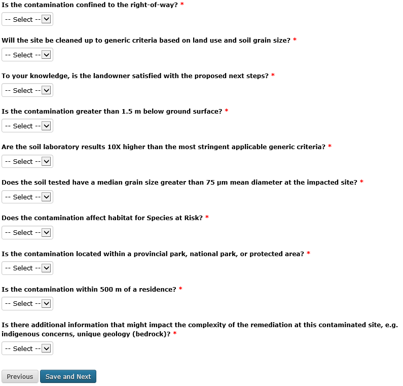
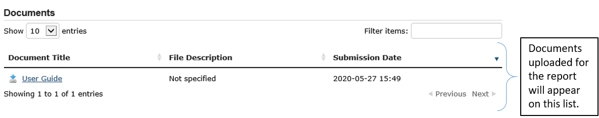
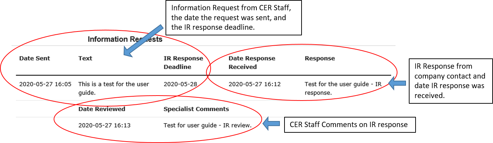

Reporting Remediation Events¶
1. Introduction¶
For information on other types of events required to be reported and for additional guidance on those event types (e.g., Incident reporting), please see the Canada Energy Regulator Event Reporting Guidelines (https://www.cer-rec.gc.ca/bts/ctrg/gnnb/rprtnggdlns/index-eng.html) or the CER Remediation Process Guide (https://www.cer-rec.gc.ca/sftnvrnmnt/nvrnmnt/rmdtnprcssgd/index-eng.html).
2. Contact Us¶
If you have technical questions related to a specific REM event you have already reported in OERS, please go to the event using the link sent by the system and use the “Send a Message to the CER” function. This will direct your inquiry to the CER Environmental Analyst assigned to your REM event.
If you are having trouble submitting a NOC or you cannot find the information you need in this manual, please email DLERSSupport@cer-rec.gc.ca. CER staff will respond within 1 business day.
3. Acronym List¶
CER Canada Energy Regulator
DIR Detailed Incident Report
IR Information Request
NOC Notice of Contamination
OERS Online Event Reporting System
OM Operations and Maintenance
RAP Remedial Action Plan
REM Remediation Event
4. Notice of Contamination Submission¶
4.1 Getting Started¶
The OERS is located at the following web address: https://apps.cer-rec.gc.ca/ers.
To report a new event, click the Continue button at the bottom of the welcome page. You will be asked to provide some pertinent information, including an email address. The email address will be used to allow the system to send you a link to access the full OERS portal. Once complete, click “Save and Next”.
{kind=link}
*Email Confirmation*
4.3 Reporting Specific Event Types¶
The first screen you will see allows you to select the event types you want to report. Find “Notice of Contamination” under “Notification – Remediation.”
{kind=link}
Note: The identification of residual contamination in a Detailed Incident Report (DIR) will automatically generate a link to a NOC submission. The NOC should be filled out within five days of receiving the link. This link will be sent to the contact that completed the DIR.
4.4 Company¶
The next screen asks about the company responsible for the particular pipeline on which the NOC occurred.
{kind=link}
4.5 Contacts¶
The contacts screen will display the contact information entered in the initial contact page. Additional contacts may be entered on this screen by selecting “Add Contact.” Contact information can be modified by clicking “Edit” to the right of the contact.
{kind=link}
4.6 Location¶
The location page is required for all events. It allows companies to report details of the location to the CER.
{kind=link}
{kind=link}
*Key Things to Know About the Location Page*
- Either a pipeline or a facility must be identified on the location page. If you cannot find theinformation you are looking for, you can select “Not Listed” and enter the name, diameter, length and commodity carried for pipelines and/or enter the name, facility type, latitude, and longitude for facilities. The CER will then reconcile the information with its databases.
{kind=link}
- For “What is the populated centre nearest to the contaminated site?” please only enter the name of the hamlet, village, town etc. Do not enter the province.

- GPS coordinates are mandatory for contaminated sites. The “View Location in Google Maps” function will only work if you have entered GPS coordinates into the system.
{kind=link}
If you have selected a facility, the system will auto‐populate the GPS coordinates with theinformation the CER has on file. If you notice this information is incorrect, please contact theCER at remediation@cer-rec.gc.ca.
- Use the definitions below as guidance to assist in selecting the appropriate land use category.
{kind=link}
- Agricultural Land
- Lands which are either currently cultivated or show signs of recent cultivation(i.e., within the past 5 years); or
- Lands which have not been recently cultivated (i.e., within the past 5 years), andwhere sod has developed or is beginning to develop and which is used foranimal grazing or other agricultural purposes.
Protected Area
Lands with protective designations, as identified in government regulation, and for which development is not permitted or is limited. These could include, but are not limited to:national, provincial and regional parks; federal and provincial lands with protectivedesignations (e.g., wildlife preserves, ecological reserves); and designated Critical Habitat forspecies on Schedule 1 of the Species at Risk Act.- Non‐Developed Land
Lands which remain in a relatively natural state. These could include, but are not limited tonative prairie and forest land. If the land use falls into both the Protected Area and Non‐developed Land categories, select ‘Protected Area’.- Developed Land – Industrial
Lands where the primary activity involves the production, manufacture, or construction ofgoods.- Developed Land – Small Commercial
Lands where the primary activity involves commercial businesses and not residential or manufacturing.
- Developed Land – Residential
Lands where the primary activity involves residential housing and activities.
4.7 Initial Report¶
This page directs users to input information about the contamination. If third party contamination is being reported, include ‘Third Party Contamination’ in the one-sentence description.
{kind=link}
{kind=link}
*Key Things to Know About the Initial Report Page*
The one sentence description of the site should include the major contaminant and a few words | that describe the location. For example, ‘Hydrocarbon contamination at XYZ compressor | station’ or, for a facility, ‘Amine contamination next to the XX utilities building in the SW corner | of the fenced yard’.
{kind=link}
- The date the contamination was first discovered is the date upon which the potential forcontamination was first discovered. The date the contamination was confirmed is the dateupon which laboratory analytical results confirming contamination above applicable criteria were received by the company, or a third party working on behalf of the company.
{kind=link}
Use the definitions below as guidance to assist in selecting the appropriate activity
Construction – should be selected when the REM event occurred during a construction phase. The related CER Regulatory Instrument (order or certificate) number must been entered for construction activities.
Operation – should be selected when the REM event occurred during the operational phase of a pipeline or facility.
Maintenance - should be selected when the REM event occurred during the maintenance of a pipeline or facility. The related Operations and Maintenance (OM) notification event number must be entered for maintenance activities.
Abandonment - should be selected when the event occurred during the abandonment of a pipeline or facility. The related CER Regulatory Instrument (Order or Certificate) number must be entered for abandonment activities.
{kind=link}
{kind=link}
{kind=link}
4.8 Scenario¶
The scenario page allows the company to provide more information about the contamination being
{kind=link}
{kind=link}
*Key Things to Know About the Scenario Page*
- To describe the extent of contamination, provide brief details regarding the depth and spread ofcontamination in the affected media, as delineated at the time of NOC submission.

Definition of a receptor: The person or organisms, including plants, potentially subjected to chemical exposure. If ‘terrestrial wildlife’ is selected, there is no need to identify the minimum distance between the receptor and the contamination.
Potentially affected persons and communities notification and engagement ‐ Documents cannot be uploaded until the NOC is submitted. Upon submission of the NOC the functionality to upload a document will appear in the menu on the left hand side of the page. Attach documents immediately upon submission of NOC.
- If you have any questions or concerns relating to notifying Indigenous groups potentiallyimpacted by contamination, please discuss with the CER environmental analyst assigned to yourREM event. See the CER Early Engagement Guide for further information on expectations related to engagement.
{kind=link}
4.9 Actions Page¶
{kind=link}
*Key Things to Know About the Actions Page*
The planned actions to mitigate the impacts of contamination should include a brief description of planned next steps.
- If indicated that all substances have been cleaned up such that they meet the applicable criteria,an email will be sent notifying you that a closure report must be uploaded in order to achievesite closure, as outlined in the Remediation Process Guide.
If ‘yes’ is selected to the question ‘Is the contamination contained to company-owned property’ two additional questions will pop up. This question pertains to company owned or leased lands.
{kind=link}
If the company indicates that the facility has an established groundwater and surface water monitoring program that is implemented and no free product is detected in groundwater wells, the CER may require no further submissions beyond the CCME classification worksheets and annual updates. The CER expects that accessible contamination will be remediated at facilities as specified in the company’s Environmental Protection Program.
- Note that company owned property does not apply to Right of Ways unless the company ownsthe property on which the Right of Way lies**. If the contamination is confined to company owned property at the time of NOC submission but is later determined to have migrated off company owned property, an email must be sent to remediation@cer-rec.gc.ca notifying the CER of the off‐site migration. Similarly, if no free product has appeared in groundwater monitoring wells at the time of NOC submission, but is later detected in wells, the CER must be notified.
4.10 Screening Assessment¶
The responses to the screening assessment questions will be used to automatically assign a ‘low environmental risk’ status to certain contaminated sites. If the responses to the screening assessment questions indicate ‘low risk’, OERS will automatically send a request for submission of a closure report. Upon review of the information submitted in the NOC, the CER environmental analyst may determine that further information is required prior to submission of a closure report. In this case, the CER environmental analyst will request further information through OERS.
For REM events that receive a medium or high risk site status, the REM event will follow the regular procedure highlighted in Section 5.0 of this document.
{kind=link}
4.11 Company Notes¶
This screen allows users to submit and attach a comment to the NOC. This comment box provides an opportunity for additional comments, questions, and concerns to be sent to the CER staff assigned to the NOC. The commenter’s name and email address are required.
{kind=link}
4.12 Final Submission¶
*Key Things to Know About the Final Submission Page*
- The next steps for managing the contaminated site may vary depending on how the questions were answered during the NOC submission. Some sites may require no further action except for an annual update, while others may require more in depth management. Other sites may immediately ask for a closure report following the final NOC submission.
- After submitting the “Final Submission” you will receive a “confirmation of your submission” notification email with the contents of your report. The email will specify the next action required according to the Remediation Process Guide.
- You will no longer be able to use the link provided to change the NOC submitted data. The link will now be used to manage the REM event and will only be active for contact changes, document uploads, Information Requests (IR), company notes, and submission extensions. If pertinent information was left out or if “Submit” was accidentally selected, please contact the CER at remediation@cer-rec.gc.ca.
The following section contains additional information about the follow up required on NOCs.
5. REM Event Management¶
Upon review of the REM event, the CER environmental analyst will send an email outlining the next submission required for this REM event. This email will include a link that can be used for future communication (IR responses) and for uploading documents. Use the link in the email to enter the online portal to upload the report.
Upon re‐entering OERS following NOC submission, the menu on the left hand side will include the following Table of Contents.
{kind=link}
5.1 Summary¶
This page provides an overview of the information entered in the NOC. The information contained on this page can only be changed by CER staff.
5.2 Contacts¶
The contacts screen will display the contact information entered in the initial contact page. Additional contact may be entered on this screen by selecting “Add Contact.” Contact information can be modified by clicking “Edit” to the right of the contact.
Please keep the contact information up to date and accurate. Make sure to update this field when the company contact is changed. There must be at least one contact for each REM. If there are multiple contacts on this page, each contact will receive notifications for this REM event.
5.3 Remediation Reports¶
This page lists the reports required by the CER for this REM event, according to the Remediation Process Guide. To access the list of required remediation reports, select “Remediation Reports.”
{kind=link}
The “Upload” link next to the desired report should be used to upload the required documents by the specified submission date. Upon uploading a document, the CER’s environmental analyst will be notified to review and follow up as appropriate. Documents can also be uploaded through the “Upload document” page. To view the details, documents and information requests pertaining to a specific report, select “Status” beside the desired report.

5.4 Remediation Reports – Status and Details¶
Below is an example of the “Status and Details” page for a RAP, one type of remediation report. The details about the report, attached documents, and information request, including IR response, and reviews are located on this page.
{kind=link}
Note: The report acceptance for RAPs differ from other report types. When a RAP is accepted, the identified company contact/s will receive an email with CER staff comments. For other types of reports, CER Staff comments are viewed on the above page.
There is a list of documents that are attached to each report type on the Status page. There are also details on this page for the Information Requests for each report type. See the screenshot below for the layout of the Status and Details page for a single report type.
{kind=link}
{kind=link}
5.5 Reports – Submission Date Change¶
Selecting the “Reports” under Remediation Reports will allow you to view the types of reports required for the REM event. Clicking on the specific report will bring you to a page that can be used to edit the submission date of the document with a rationale for the submission date change. You can also select ”Edit Submission Date” next to the report on the Remediation Reports page to reach the same page. If you desire to see the details, documents and information requests pertaining to a specific report or to upload a document, select “Remediation Reports”, and then “Status” or “Upload” beside the desired report.
{kind=link}
To submit a request to change the submission date dealine, enter the propsed deadline date and explanation for requesting a deadline extension, then select “Submit.” This will send an email to the CER staff assigned to the REM event. The company contact/s will receive an email when the CER staff accepts or rejects the submission deadline change request.
{kind=link}
5.6 Information Requests¶
The CER staff assigned to your REM event may issue an information request to gain further understanding, clarification and information on a report that was uploaded. The system will notify you via email when additional information has been requested. All responses to information requests must be entered through the system. The status of the information request is located on this page. Information requests are also viewable from the “Status” page in Remediation Reports. To provide a response to an IR, select “Information Requests” from the tab menu and then “Edit Response” beside the IR that you wish to respond to.
{kind=link}
The “Edit Response” link will take you to the below page where you will submit the response to the IR from the environmental analyst. Please enter the response and email address in the textbox below and click the “Submit” button. Once submitted, the response can no longer be revised.
If the response to the information request includes a document, upload the document through the “Upload Document” page and select which Remediation Report Type and IR this response is addressing.
{kind=link}
Once a CER environmental analyst has reviewed the IR, they have the opportunity to provide comments in their review. An email is not sent out for CER staff review comments, but these comments are viewable under the Information Requests tab or the Status page on the Remediation Reports tab. It is up to the discretion of CER staff to notify the company regarding IR response acceptance. An additional IR may be issued if initial IR conditions were not met.
5.7 Annual Updates¶
Previous annual updates relating to the REM event will appear on this page. No information can be edited for past annual updates.
An email request for the annual update will be send by the CER on 1 April. This email will contain a link to the page which lists all the REM events that are active (i.e., not closed or misreported) for the company that your email is the contact for (i.e., if your company has more than one contact assigned to different REMs, all contacts will receive the same list of annual updates). An annual update must be submitted for every REM event for which the NOC was submitted prior to 31 December of the previous year, and are not yet closed.
You will be able to submit the annual update upon receiving the annual update request email sent by the CER. The annual updates must be submitted by 30 June. Reminder emails will be sent on the 15 June.
The following is an example of an annual update. These four questions must be answered for each REM event separately. Select “Save”, when wanting to save the progress for the annual update. Select “Submit,” when you are ready to send the annual update to the CER. The annual update cannot be changed once submitted.
{kind=link}
*Key Things to Know About Annual Updates*
The site status needs to be updated annually. The below guidance should be used when assigning site statuses to REM events:
Site assessment – Environmental Site Assessment in progress to determine next steps, prior to active remedial or risk management work
Ongoing remediation – RAP has been submitted and/or or active remedial work is ongoing
Post remediation monitoring – Active remedial work complete and groundwater or reclamation monitoring is in effect
Risk managed – Risk Management Plan has been submitted and/or risk management is taking place
Facility monitoring – Use this status at facilities on company owned or leased lands where there is a groundwater monitoring program in place as described in section 12.3 of the CER 2020 Remediation Process Guide.
Items that should be included in the summary of planned future remedial activities and submitted reports are as follows: the plans for the development of a remedial action plan (RAP), risk management plan (RMP) or closure report in the annual update), along with justification for the report being developed. The CER Environmental Analyst will consider this justification, along with the information submitted in the NOC, CCME worksheets, and any persons’ interest(s) in the site, when requesting a RAP, RMP or closure report. Refer to Appendix C of the CER 202 Remediation Process Guide for guidance on when a RAP is required.

{kind=link}
5.8 Company Notes¶
This screen allows users to submit and attach a comment to the REM event. This comment box provides an opportunity for additional comments, questions, and concerns to be sent to the CER staff assigned to the NOC. The commenter’s name and email address are required. Select “Submit,” when you are ready to send the CER your comments. Select “Save,” when you want to save your progress, but are not ready to send the automated email. Note: CER Staff are still able to view Company Notes when “saved,” but will not receive an email notification until it is “Submitted.”
5.9 Documents Page¶
The Documents screen allows for the upload of documents relating to the REM event including, photographs, reports, various types of correspondence, etc.
Populate the mandatory fields and select document type from the drop down menu.
You can select “Add” for each additional document, or you can click “Next” when all documents have been uploaded.
Key Things to Know About the Documents Page:
1. The size limit for uploads is 50 MB. If you have a larger file than that you may submit it in hardcopy or via digital media directly to the CER Records and Mail department. When you do so please quote the REM event number for the file.
- You may upload as many documents as are required.
3. Once you have uploaded a document and you wish to delete it, you can contact the CER via email to remediation@cer-rec.gc.ca
4. Do not upload documents that contain private or sensitive information. You must submit any of these documents in hard-copy to the CER Records and Mail department and indicate that you wish to submit them under section 16.1 of the CER Act. As above, please include the REM event number with the document.

5.10 Site Closure¶
Site Closure is initiated by CER staff by requesting a “Closure Report” through an email generated by the system. The workflow for this request will be similar to other report types. The company contact may request a deadline extension, view the report status, and upload a document pertaining to the Closure Report under the Remediation Reports tab.
{kind=link}
Upon submission of a Closure Report and Declaration Letter, the CER environmental analyst will review the closure report and if satisfied, recommend site closure to the Director of the Environmental Protection Team. Upon accepting the recommendation to close the site, the CER will send via email a Remediation Closure Letter and Close the REM event in OERS. The company will receive an automated email stating that the REM event has been closed and will no longer be able to access the REM event in OERS.